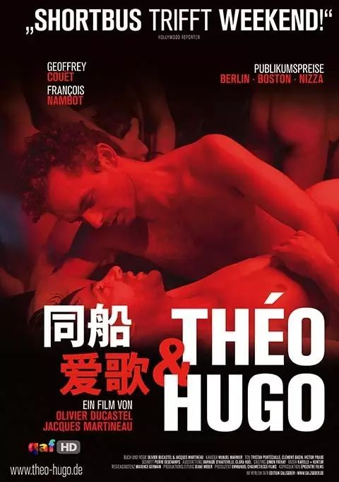
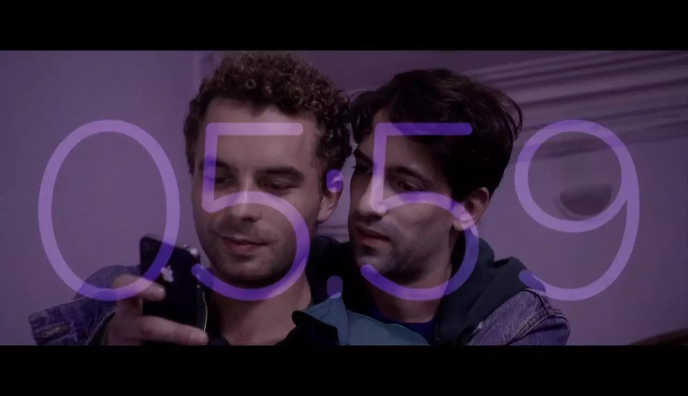
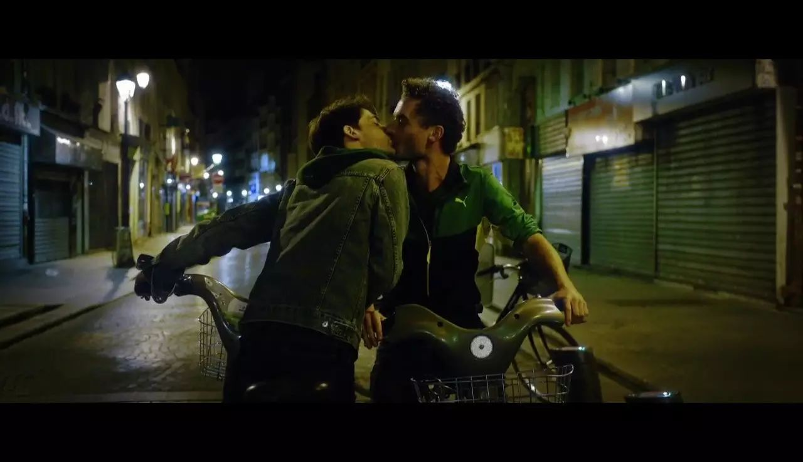
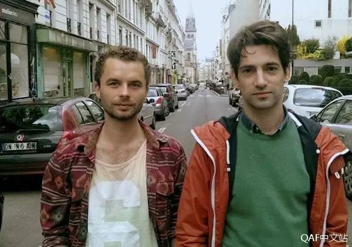
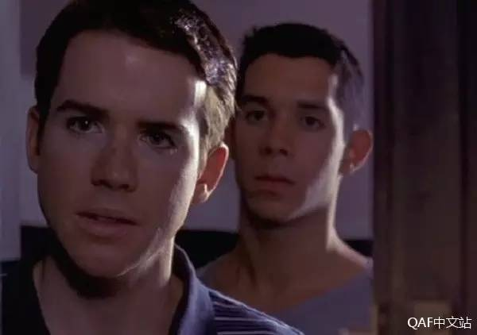
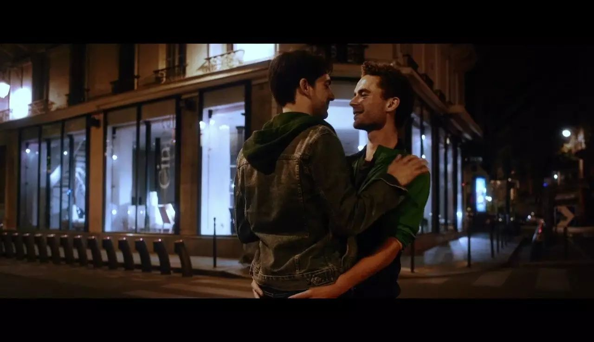
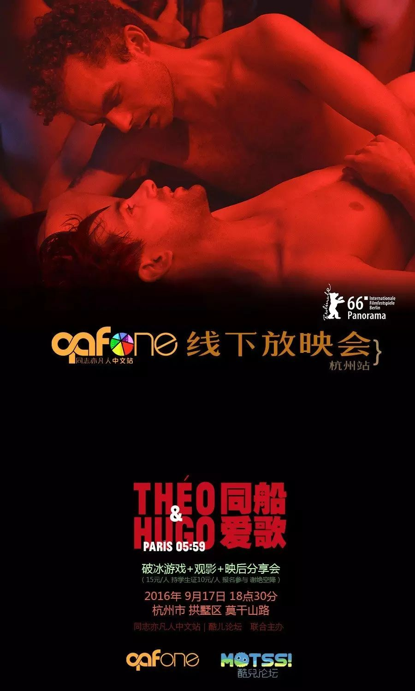

线下放映会 | 一夜巴黎，奏出一首激情又清新的“同船爱歌”
以下文章来源于QAF中文站 ，作者多元×健康×平等=
国内最具影响力的同志影视字幕制作论坛，更多精彩内容欢迎访问官方网站：qafone.co 微博及豆瓣官方账号均为：QAF中文站
《同船爱歌》（Théo et Hugo dans le même bateau，台译《5点59分爱上你》）很可能是今年最疯狂的同志电影：一方面它是是耻度惊人的GV，包括一场长达20分钟、真枪实弹的限制级群交，血脉贲张得让人想要报警；另一方面它也是两个陌生男子在巴黎的柔情一夜，主角们穿行大街小巷聊天说爱，清新的互动几乎快把屏幕甜化了。这个“黄暴+唯美”的奇诡二重奏，正是法国夫夫导演奥利维耶·杜卡斯泰尔和雅克·玛尔提诺想要呈现给观众的——真实。
《同船爱歌 / Paris 05:59》
2016 / 法语 / 剧情 / 97分钟

这部影片的剧情很简单：两个年轻人在巴黎一家性爱俱乐部相互看中，他们试探、进入，完事后结伴而去，在对话中温存，直到没戴套的事实被提起，这一夜一下就变得很长了..……整个电影的片长几乎等于故事里的真实时间，两人从相识到争吵再到决定相伴，一切的过程都发生在凌晨6点之前，所以英文片名叫“Paris 05:59”。

“同船”指的是两位主角需要同舟共济、面对可能的艾滋感染。这个艾滋恐惧就像一把横在头上的达摩克利斯之剑，让他们情不自禁的彼此贴近，也让一场单纯的419有了各种后续的可能。
电影看似没有主动讨论感染者的生活，却用两人间的对白细节把属于个人生活的感染体验展示出来。宏大的叙事、公益的宣传之下，还有许多的无奈、浪漫，以及生活。

"这是一部将侯麦化作情色的走钢索之作，拥有难以置信的魅力。"
——柏林电影节
一般电影都是先培养感情再发生肉体关系，《同船爱歌》却是反其道而行，将“做爱”变成先做后爱。主角们在迷离的灯光下J液和T液齐飞，交织流淌的红蓝背景充满眈眈情欲。
直到现实冷水当头浇下，电影又开启了浪漫模式：两人结伴去医院做检查，骑单车在夜色清凉的街道追逐，站在塞纳河的桥上争吵道歉，坐凌晨第一班地铁回家，以及到家后差点又再战一场.……
可以说《同船爱歌》做了一切热恋中情侣会做的事，只不过把顺序给颠倒了。看似简单的剧情延续了两位导演对艾滋问题的关注，但却巧妙的换了一个角度：当你的生命面临潜在威胁时，爱情还有发展下去的可能吗？如果那个人可能带给你不治之症，你还会爱上他吗？电影的回答是Yes。正是这样的升华让它的啪啪戏和一般GV区别了开来，赋予了整个故事灵肉合一的质感。

两位为艺术电影彻底献身的主演
Geoffrey Couët和François Nambot
在《同船爱歌》之前关于同志一夜情的电影要追溯到1999年的《天雷勾动地火》。
同样是一个晚上的故事，《天雷勾动地火》两位主角兜兜转转都快憋疯了，就为找一个可以做爱的地方；而《同船爱歌》一开始就duang的一声把它给办了。
这种对比可以清晰看到同志电影的进化轨迹：“同性恋”的性不再是问题，而恋却永远是一个寻找、试探、进二退一的过程。恋上的过程可以有千百种，既然伊桑·霍克和朱莉·德尔佩能够在维也纳一见钟情从此纠缠18年，为什么两具诚实的肉体不能通过鱼水之欢将对方视作归属呢？更何况他们还可能坐上同一艘船。从这个意义上，整部电影所描绘的感情其实就和5:59分这个时点一样，都是带着惺忪睡意踏上新一天的黎明破晓前。

《天雷勾动地火》
最失败的一夜情，却换来充满无限可能的明天
这种因性生爱的模式无疑是对传统爱情故事流程的反叛与思考，同时也让无数人见到了展开伴侣关系的另一种可能。
如果你和过去/现在/未来的伴侣也是因性生爱，希望这不会对你造成困扰，即使它不同于公序良俗所提倡的那样。

要总结的话，这是一部三观极正又毫不低俗的影片，因为众所周知的原因我们没办法让它通过在线视频的审核，但是我们会尽力让更多的人看到。
所以这次QAF中文站与酷儿论坛携手举办了本部影片的杭州线下放映会，为前不久饱受管制的杭州群众带来了一大波狗粮，在大屏幕下观看更是完全不同的体验哦。

杭州站
机构:酷儿论坛
时间:9月17日 18:30入场
地点:杭州市拱墅区莫干山路附近
流程:破冰游戏+观影+映后老司机分享教你如何安全地风骚浪荡
费用:15元/人（学生10元/人，需携带证件）
人数:25人左右，报名参与谢绝空降
长按扫描二维码报名